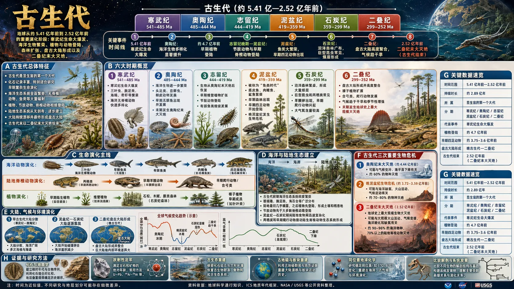

<!doctype html>
<html lang="zh-CN">
<head>
  <meta charset="utf-8" />
  <meta name="viewport" content="width=device-width, initial-scale=1" />
  <title>古生代｜地球历史</title>
  <link rel="stylesheet" href="../styles.css" />
</head>
<body>
  <a class="back-rail" href="phanerozoic.html" aria-label="返回显生宙页面" style="opacity:0; transition: opacity 0.15s ease-out;"><span>返回显生宙</span></a>
  <main class="image-page" aria-label="古生代">
    <div class="image-stage" id="mainStage">
      <picture>
        
      </picture>
      <svg class="hotspots" viewBox="0 0 1672 941" aria-label="古生代页面链接" style="opacity:0; transition: opacity 0.15s ease-out;">
        <a href="cambrian.html" aria-label="进入寒武纪页面">
          <rect x="438" y="46" width="149" height="55" />
        </a>
        <a href="ordovician.html" aria-label="进入奥陶纪页面">
          <rect x="587" y="46" width="150" height="55" />
        </a>
        <a href="silurian.html" aria-label="进入志留纪页面">
          <rect x="737" y="46" width="149" height="55" />
        </a>
        <a href="devonian.html" aria-label="进入泥盆纪页面">
          <rect x="886" y="46" width="139" height="55" />
        </a>
        <a href="carboniferous.html" aria-label="进入石炭纪页面">
          <rect x="1025" y="46" width="139" height="55" />
        </a>
        <a href="permian.html" aria-label="进入二叠纪页面">
          <rect x="1164" y="46" width="140" height="55" />
        </a>
      </svg>
    </div>
  </main>
  <script>
    document.addEventListener('DOMContentLoaded', function() {
      const stage = document.getElementById('mainStage');
      const img = stage.querySelector('img');
      const backRail = document.querySelector('.back-rail');
      const hotspots = stage.querySelector('.hotspots');
      
      function revealImage() {
        img.classList.add('loaded');
        stage.classList.add('loaded');
        if (backRail) backRail.style.opacity = '1';
        if (hotspots) hotspots.style.opacity = '1';
      }
      
      if (img.complete && img.naturalHeight !== 0) {
        requestAnimationFrame(revealImage);
      } else {
        img.addEventListener('load', function onLoad() {
          img.removeEventListener('load', onLoad);
          requestAnimationFrame(revealImage);
        });
      }
    });
  </script>
</body>
</html>
